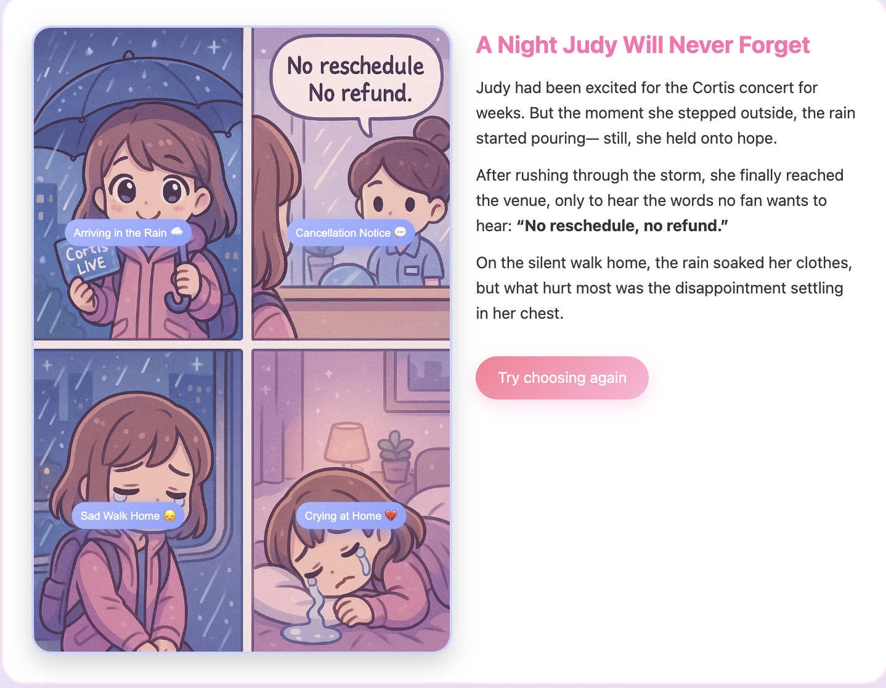
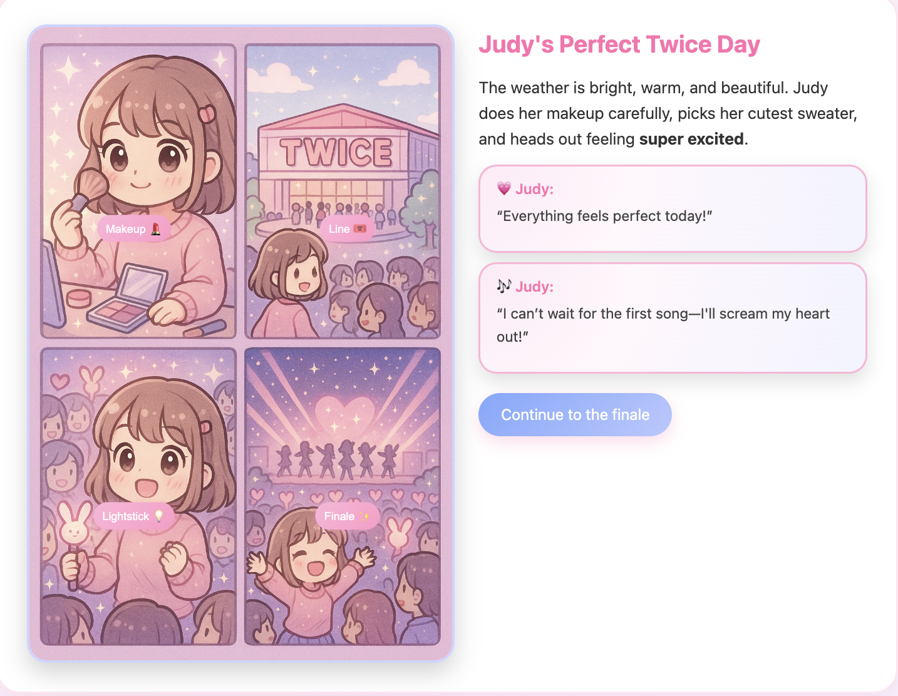
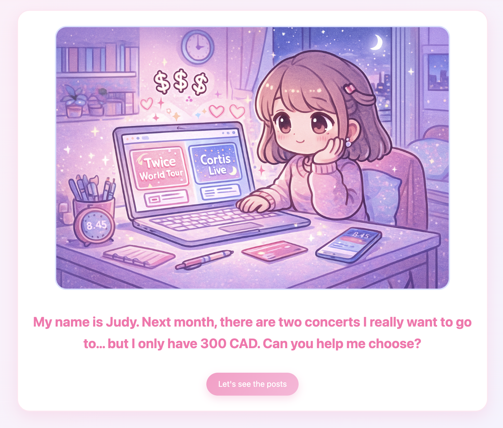
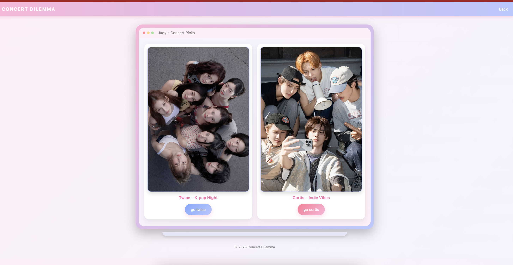
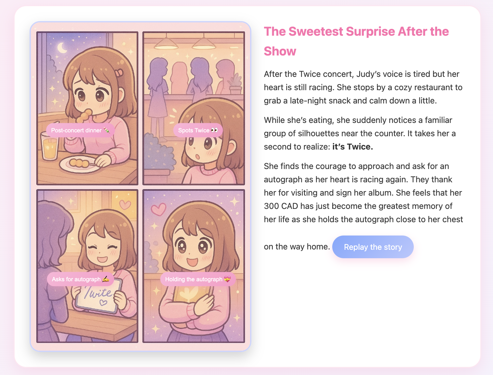
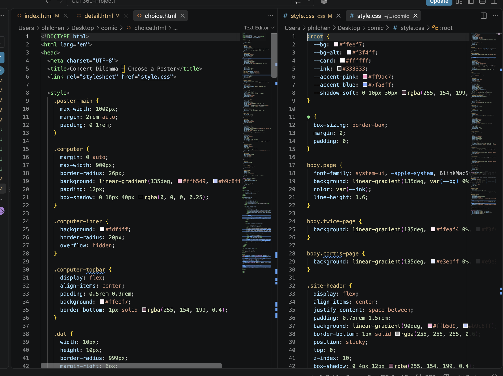

01 / Project Overview
This project was created for my CCT260 course at the University of Toronto Mississauga. The assignment was to design and develop a multi-page interactive website in the form of a digital comic or story. Instead of following a traditional storyline, users are presented with two choices on each page. Depending on which option they select, they are directed to a different page, allowing the story to develop in different directions.






02 / Challenges & Solutions
The main challenge of this project was keeping the design consistent across different pages while making each part of the story interesting. Since users could make different choices and follow different storylines, I wanted each page to feel unique without making the overall website look disconnected. To solve this, I used a consistent colour palette, typography, and layout throughout the website while changing the images, content, and choices to match each part of the story. This helped create a more cohesive design while keeping the experience engaging for users.
03 / Results & What I Learned
Through this project, I created an interactive comic website where users could explore different storylines based on their choices. I learned how important it is to maintain a consistent design while still making each page feel unique and engaging. The project also helped me improve my skills in web design, page navigation, and creative storytelling. Most importantly, I realized that a good website is not just about how it looks, but also about how users experience and interact with it.